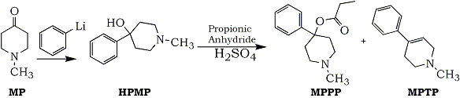

ASCII by Aurelius, HTML by Rhodium
Through an unlikely series of coincidences and fortunate accidents, the development of Parkinson�s disease in several illicit drug users was traced to their use of a meperidine analog contaminated with 1-methyl-4-phenyl-1,2,3,6-tetrahydropyridine (MPT. The discovery of a chemical capable of producing animal models of the disease has revitalized research efforts and resulted in important new informati. The serendipitous finding also prompted consideration of what changes seem advisable if designer drugs are to be dealt with more efficaciously.
From a number of perspectives, designer drugs have little to recommend them: they make diagnosis more difficult for the treating physician, identification more complicated for the toxicologist, and enforcement of drugs laws impossible, to say nothing of making life riskier for the consumer. Only the manufacturers and suppliers, who so adroitly sidestep the law with these ingenious synthetics, profit. There are unique aspects of the designer drug industry which may confound even those well-established systems that have evolved out of extensive experience handling drug associated problems. Such a system has developed in Santa Clara County, California, where the explosive growth of high tech industry was accompanied by the widespread use of meth in the 1960�s, secobarbital in the 70�s, and phencyclidine (PCP), first in popularity in . 9. It was here that the distribution of an impure designer drug led to what has been called the first designer drug disa. r. The process of tracking down the cause, MPTP, involved an improbable series of coincidences suggesting that changes are needed if existing systems are to cope with designer d. s. Despite the misfortune of the MPTP victims, the outcome of the incident was overwhelmingly positive since it led to a major breakthrough in understanding Parkinson�s disease.
This particular chain of events started in 1981 with two �entrepreneurs,� one an attorney, the other a paralegal, who, I hypothesize, did some market research and opted to enter the field of synthetic chemi. y. As prudent businessmen, they knew that it was possible to produce a salable and profitable product while avoiding the legal pitf. s. Their first venture was less than successful; after renting a house in an upscale residential area near San Jose, and accumulating large quantities of the chemicals needed to manufacture a fentanyl analog, they had a fire which not only burned some of the chemicals but, worse, caused the leakage of HCl gas from overheated contai. s. This necessitated the evacuation of much of the area�s popu. ion. Because the overriding concern was for the public safety, prompt arrangements were made for proper disposal of the chemicals which had not burned and the incident did not come to the attention of the appropriate law enforcement personnel until. ter. Although the partners were no longer available for questioning, they had left behind a large binder containing patents, syntheses, and notes about numerous experimental drugs, including fentanyl analogs.
About a year after this incident, the entrepreneurs apparently decided to try their luck again, this time with a different drug. Their target product, 4-propyloxy-4-phenyl-N-methylpiperidine (MPPP), is structurally related to meperidine and alpha prodine (Fig. 1), both of which are controlled substances. Like meperidine, MPPP has pharmacologic activity as an analgesic, but, because of the slight modification in structure, was not illegal. The partners obtained the required supplies, rented a house in a different area of the county, and set up their operation. As luck would have it, the packing slip, which contained a list of the chemicals ordered as well as the purchaser�s identity, was found, accidentally, by a chemist who thought it was odd that a law firm should need such suppli. He notified the authorities who shared his suspicions, but were unable to obtain a search warrant for lack of probable cau. However, some investigation seemed in order, and, since the chemicals did constitute a fire hazard, the fire department was asked to inspect the premis. When they did so, they were accompanied by an undercover offic. The lab operator allowed the inspection, claiming that he was engaged in developing skin moisturizers and snow cone flavorin. Unfortunately, aside from warning the lab about the fire hazard and requiring proper disposal of the chemicals, no action could be tak. However, during the inspection, the undercover officer spotted some powder and surreptitiously (read: illegally) managed to obtain a small sample of . This material, along with the packing slip, was submitted to the Santa Clara County Laboratory of Criminalistics where chemical analysis of the powder ruled out the presence of controlled substanc. Criminalist James Norris examined the packing slip and concluded that the chemicals were probably being used to synthesize fentanyl analogs, although the list was not a perfect fit to the most common synthetic pa. This conclusion was strengthened by the fact that the earlier incident had, by this time, been linked to the same two individuals.
Another sequence of events was taking place almost contemporaneously with the second venture. These centered around a 42-year-old Hispanic male who had been admitted to the Santa Clara County Medical Center; he lay in his bed drooling, unable to speak or to walk unless assisted, and even then only slowly and in a stooped position. About a week later, the hospital also admitted the patient�s 32-year-old girlfriend, suffering from palsy and rigidi. The medical staff, looking for a common denominator, perhaps a virus or some environmental toxin, discovered that the couple, both habitual heroin users, had started to have health problems after using a drug sold to them as new or synthetic hero. One of their physicians, William Langston, issued public warnings, which brought in three more patients with essentially the same symptoms: stiffness, impaired speech, rigidity, and tremo. Two additional patients, also drug users, were discovered in Santa Cruz County, about 50 miles to the south, when another member of the San Jose medical staff happened to mention his cases to a friend at a dinner par. The cause of the illness was still a mystery, but, on the basis of their symptoms; and despite their ages and histories, the patients were diagnosed as suffering from Parkinsonian Syndrome.
Parkinson�s disease usually appears in the later years and produces progessive disability usually developing over a long period of ti. The symptoms of the disease include tremors which may increase with stress or anxiety and which render initiation of movement increasingly difficult, inefficient, and fatigui. The �masked� facial expression is a typical result of bradykinesia, which is characterized by decreased spontaneous movement and slow initiation of voluntary mov. nts. The disease also produces muscle rigidity and, in later stages, postural defects which prevent the victim from remaining upright while standing or walking, thus a stooped position and an involuntary accelerate. ait. Advanced stages of the conditions also bring impaired motor function leading to impairment of postural reflexes, excessive salivation, reduced blinking, weakness of voice, and impaired ocular convergence.
Certain drugs or conditions can produce Parkinson-like syndrome, but in true parkinsonism it is the loss of the melanin-containing neurons in the substantia nigra which causes the disabilities. In the basal ganglia of normal individuals, there are high concentrations of the neurotransmittors dopamine and acetylchloline. In the striated tracts, which are important for smooth control of voluntary movement, there is usually a balance between the inhibitory (dopaminergic) and excitatory (cholinergic) components. If the balance of the components is lost, specific disorders of movement occur. In the case of parkinsonism, it is a dopaminergic deficiency which produces the disability and the degree of deficiency correlates with the loss of the substantia nigra cells. The disease cannot be treated directly with dopamine because this drug does not cross the blood-brain barrier (BBB) when administered systemically. However, levodopa, the immediate metabolic precursor of dopamine, does permeate into the striatal tissue where it is decarboxylated to dopamine2. The marked improvement in the patients� condition after initiation of levodopa therapy supported the accuracy of the diagnosis.
Working from the information that all the patients were drug users, the physicians obtained from the victims two small samples of the drug material they had been using�one sample from each ar. They then sent aliquots to Dr. Gary Henderson, an expert on fentanyl analogs, and to two clinical toxicology la. Henderson ruled out the presence of fentanyl-like drugs, but the identity of the substance remained a myste. One of the hospital toxicologists consulted the author, the forensic toxicologist at the County Laboratory of Criminalisti. The only drug suggested by any of the symptoms was phencyclidine (PCP) or a related substance, but it was not a good mat. The author obtained a sample of the powder, but was able only to rule out PCP and its common analo. However, a few days later, the author recalled an article, which had been published several years earlier, about a graduate student who developed parkinsonism after using a drug he had synthesiz. The article had been printed in a new journal named Psychiatry Research after it had been rejected by two mainstream journals, in one case because it discussed only one patient and, in the other case, because there were too many authors3
The article, entitled �Chronic Parkinsonism Secondary to Intravenous Injection of Meperidine Analogues�4, described a 23-year-old male student who had been experimenting with drugs of abuse for 9 y. s. For several months he had been using MPPP, the meperidine analog he had synthesized. However, he started to shortcut the synthesis with increased temperatures and shorter reaction times, thereby inadvertently producing contaminated batches of . g. After using the new product he started to suffer from muteness, rigidity, weakness, tremor, and flat facial expres. n. He was admitted to the hospital with an initial diagnosis of catatonic schizophr. a. Later treatment with levodopa/carbidopa brought significant improve. t. The symptoms and the response to the drug therapy pointed to parkinsonism, but interviews with the patient and his family indicated that the disease had been too rapid in o. t. After a period of time during which varied drug treatments were used (bromocriptine was substituted for levodopa when the patient started to abuse the latter), the patient was released, improved but still suffering from some effects of the ill. s. The patient continued to abuse drugs and about two years after he had started to use MPPP, he was found dead of a cocaine related drug over. e. At autopsy, examination of the brain revealed Parkinson related abnormalities including destruction within the substantia n. a. The authors concluded that this case appeared to be one in which induced damage to the aminergic neurons in the substantia nigra resulted in parkinsonian syndrome. The authors had conducted an impressively thorough investigation during which it was discovered that MPPP had been chosen because it was a more potent analgesic than meperidine and because it could be easily synthesized from unrestricted chemicals. The starting material was N-methyl-4-piperidone (MP), which was converted to 4-hydroxy-4-phenyl-N-methylpiperidine (HPMP) by phenyl lithium. The intermediate was then reacted with propionic anhydride to produce the ester and desired product, MPPP. Although the earlier batches had been successful, when the subject modified the procedure, the new reaction conditions resulted in dehydration of HPMP and MPPP to the undesirable side product, N-methyl-4-phenyl-1,2,3,6-tetrahydropyridine (MPTP) (Fig. 2). The authors hypothesized that it was the use of these sloppy batches containing a mixture of HPMP, MPPP, and MPTP that probably caused the parkinsonism4. The similarities between this case and the current cases could not be ignored. It seemed almost certain that this case and the current cases were related, particularly when, in response to a causal comment by the author about these cases, criminalist Norris examined the MPPP reaction scheme in the article and concluded that the chemicals required for that synthesis were a match for those on the packing slip from the illicit laboratory. In an effort to supplement this information, a few additional tests were run on the powder: the gas chromatographic and TLC behavior of the unknowns closely resembled that of meperidine. Although the unavailability of MPPP and MPTP reference material prevented a conclusive determination, it was decided that, given the consistency of the available data, the treating physicians could be informed. Meanwhile, with the new and unexpected samples which could be sent to the DEA lab for identification. Although it took the threat of search warrant, Norris prevailed and samples were provided to DEA chemists. The structures of the unknowns were elucidated and their identities confirmed: MPPP and MPTP. The composition and appearance of the powders from the various sources varied: the sample from the San Jose patients was white and contained primarily MPTP; the Santa Cruz County sample was brown and was a mix of MPPP and MPTP. The powder taken during the fire inspection of the illicit lab contained MPTP with only a trace of MPPP. Data obtained by the DEA Lab and the Lab of Criminalistics for the detection of and identification of MPPP and MPTP include the following: color tests may provide some information initially; Marquis reagent produces a red violet to blood red color, depending on concentration; there is no color with Mecke reagent; the cobalt thiocyanate test gives a blue color (chloroform soluble)5. The TLC system utilizes Merck silica gel 60 F254 plates developed in a chloroform methanol mixture (4:1). The spots may be visualized with either iodoplatinate spray or Marquis reagent streaked on the plate. The synthetic intermediate HPMP, migrates to Rf 0.12, MPTP to Rf 0.29, MPPP to Rf 0.40. All three give brown red spots with Marquis. The iodoplatinate spray reacts with the HPMP and the MPPP to give purple spots that dry to purple-brown; MPTP turns blue/black and dries to purple5. An alternative system uses Merck silica gel plates developed in a mix of methanol and phosphate buffer at pH 4 (100:1): MPTP migrates to Rf 0.24 and MPPP to 0.31. GC at the Lab of Criminalistics was performed on a 6� (1.8mm) glass column packed with 2.5% SE-30 at about 200°. Under these conditions, meperidine elutes at 3.5minutes, MPPP at 3.65 minutes, and MPTP at 1.55minut. The compounds may also be detected on 3% OV-1 (at 160°C) or OV-17 (at 190°C) columns: on the former elution times are MPTP at 1.19, HPMP at 1.45, meperidine at 3.28 and MPPP at 3.33minut. Thermal decomposition may be a problem on these columns. The infrared spectrum of MPPP contains peaks at approximately 700, 770, 880, 910, 1050, 1160, 1190, 1470, 1745, and 2500 to 2600 wave numbers. The peaks at 770, 1190, and 1380 may occur with or without splitting. The infrared (IR) spectrum of MPTP contains major peaks at 690, 755, 820, 960, 1090, 1150, 1200, 1430, 2500 to 2700, and 2750 wave numbers. The mass spectrum of MPPP has major (in order of decreasing magnitude) at 173, 172, 96, 91, 77, 103, 174, 115, 57, 70, 130, 129, 144 and 82 amu5. The circumstantial evidence that MPTP had some role in the development of Parkinson�s disease precipitated a frenzy of scientific investigati. Langston�s 1983 article6 announcing the relationship between MPTP and parkinsonism in humans was followed almost immediately by news of a successful MPTP induced model of the disease in monkeys7,8. >. Prior experimentation in which MPTP had been administered to produce an animal model3, but recent investigations have demonstrated marked differences in susceptibility to MPTP based on spe. s. Burn�s monkey model was a significant advance because, for the first time, the artificially produced parkinsonism was almost identical to the naturally occurring disease in humans8. Subsequent work has revealed that MPTP itself is not the neurotoxin: the selective destruction of the dopamine neurons of the substantia nigra is due, in part, to the high affinity with which MPTP binds to monoamine oxidase B. This enzyme converts MPTP to methylphenyldihydropyridine, which may undergo further oxidation to methylphenylpyridine (MPP+)9. It this conversion is prevented by prior administration of an MAO inhibitor, MPTP does not have the expected effects. Hence, it is MPP+, not MPTP, which is required for neurotoxicity. This effect appears to be related to the selective binding of MPP+ to the neuromelanin in the substantia nigra10. Neuromelanin can occur as a dopamine breakdown product and tends to increase in aging nigral cells. After the MPP+ on mitochondrial respiration that causes cell death; the toxin has an inhibitory effect on oxidation of NADH linked substrates (for example, pyruvate-malate) while leaving succinate oxidation unaffected11. As research generates more answers about parkinsonism, attention focuses on other questions about the disease, such as its preferential attack on older organisms. This is a well-known characteristic of parkinsonism as it usually occurs in humans, but it has also been observed that when experimental doses of MPTP are administered to animals, damage is greater in the older animals. Several conditions probably contribute to this effect: older neurons have an increased sensitivity to MPTP, older brains are more efficient at converting MPTP to MPP+, an neuromelanin, which accumulates in the nigral cells as they age, has a high affinity for MPP+, which may then cause the death of the host cell12. This raises the question of whether, sometime during the gradual and invisible process described above, before the onset of symptoms, it might be possible to diagnose the disease in its preclinical state. As the disease develops, or as the neurons of the substantia nigra are depleted, as happens naturally with age, the dopamine level drops. When the deficit is at about 70%, the onset of parkinsonian symptoms occurs. Four subjects who had used the �new heroin� but had not developed symptoms were subjected to positron emission tomography (PET) to monitor dopamine and its metabolites in the nigral area and were found to have dopamine levels between the levels found in normal individuals and those with parkinso. m. In the first demonstration of the preclinical condition, these subjects were determined to be pre-parkinsonian13. The elucidation of the role of MPTP in parkinsonism has also stimulated questions about whether environmental factors may have a role in causing the disease, and if so, whether other chemicals in the environment may have effects similar to those of MPTP. One�s predisposition to this disease may depend on if, when, and how much exposure one has had to certain chemicals1414, or to treat it in some other w. Surgical transplantations of adrenal tissue to the brain is also being explored12. It is obvious from the narrative above that it was only a series of happy accidents and coincidences that opened the door to the remarkable advances of the past few years. The MPTP episode makes it clear that the very nature of the designer drug industry requires modification of existing systems, even those with demonstrated proficiency in handling drug related problems, if failure (or worse, accidental success) is to be avoided. Examination of the sequence of events surrounding the 1982 MPTP cases shows that a number of public services and agencies were involved: the fire department, police departments, DEA, County Medical Center, clinical toxicology labs, and the Laboratory of Criminalistics, which houses the forensic toxicology services as well as the chemists who analyze contraband and assist with illicit drug lab investigations. Although they were not part of these cases, other agencies which might well have been, include the toxics disposal specialists of the fire department, the Medical Examiner, Coroner and the postmortem toxicology lab. Since the existence and organization of the involved agencies, and the relationships between them, vary widely from community to community, only general guidelines can be discussed. Two areas needing significant improvement are immediately apparent: education of all potentially involved agencies and communication among them. Although each agency needs information tailored to its specific role, certain types of knowledge are essential to all. The most basic information is a comprehensive description of what is meant by �designer drugs,� how they differ from other illicit drugs, the implications of these differences, and the fact that they are indeed a problem which should not be ign. d. For instance, it is essential that fire and police personnel as well as hospital and laboratory staffs, any of whom may come in contact with unknown liquids or powders, be made aware of the potential toxicity of such substances and of the safe handling and disposal procedures. The next step is understanding how to recognize instances where the problem is indicated. This may depend on knowing that a negative lab result in the face of contradictory indications may be meaningful. This is true for the police, the clinical toxicologist, forensic toxicologists, contraband analyst, and medical examiner. An excellent example occurred in Orange County (Cal.) Sheriff-Coroner�s Laboratory: fatalities that seemed circumstantially to be narcotics overdose cases could not be demonstrated as such by toxicological analys. It was later, when a powder sample submitted was identified as a fentanyl analog, that the alert Laboratory staff was able to go back to the older cases and solve th. Once this level of education is reached, it becomes invaluable to know what other agencies are available as resources, what their areas of expertise are, what other outside resources they have access to (for example, forensic science labs may use the service of the DEA lab, which excels at identifying unknowns), and how these various agencies can interface to provide maximum service to the clients and the publ. Attainment of this level should be followed by establishment of lines of routine communications for purposes of information sharing and recognizing patterns in drug problem, thus optimizing the chances of identifying problems as soon as possible. When drug dealers could be counted on to sell only the standard merchandise, dealing with drug associated problems was, in many ways, more straightforward. However, the advent of the creative (but not necessarily compotent) drug chemist forces changes if the system is to deal successfully with the new challenges. As the 1982 MPTP cases demonstrated, serendipity may provide the answers, but interagency and interdisciplinary communication and cooperation would minimize the role of luck.Fig. 2
Methods and Results
Afterward
Discussion